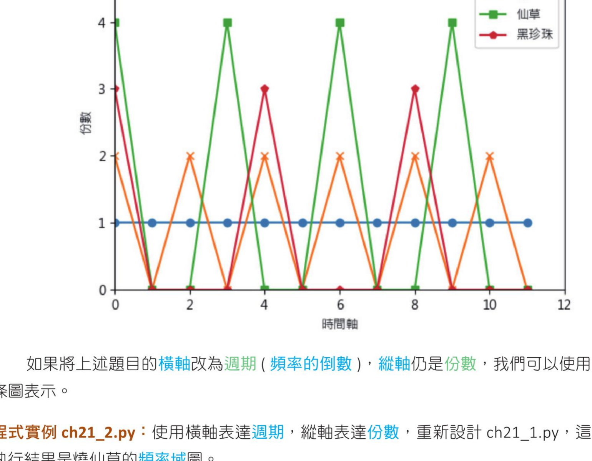
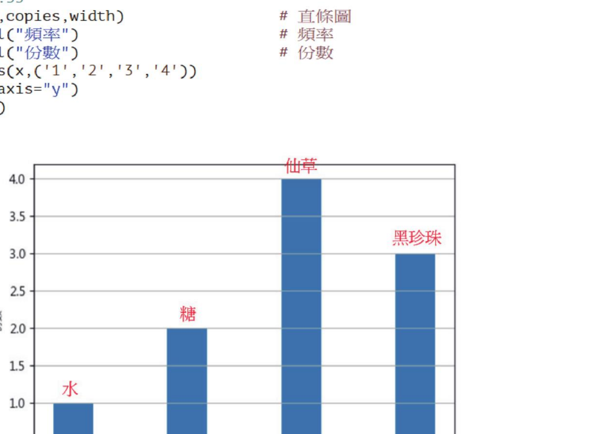
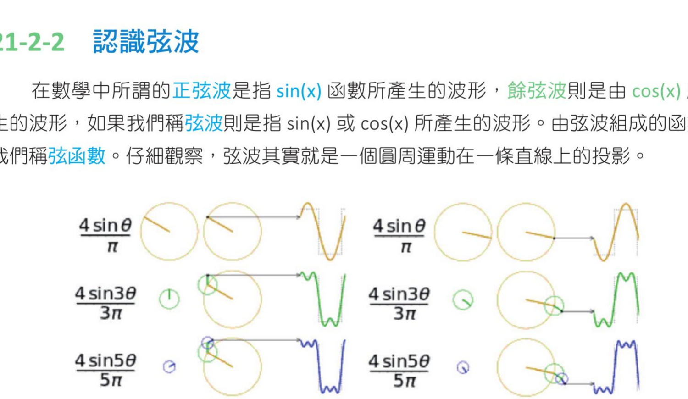
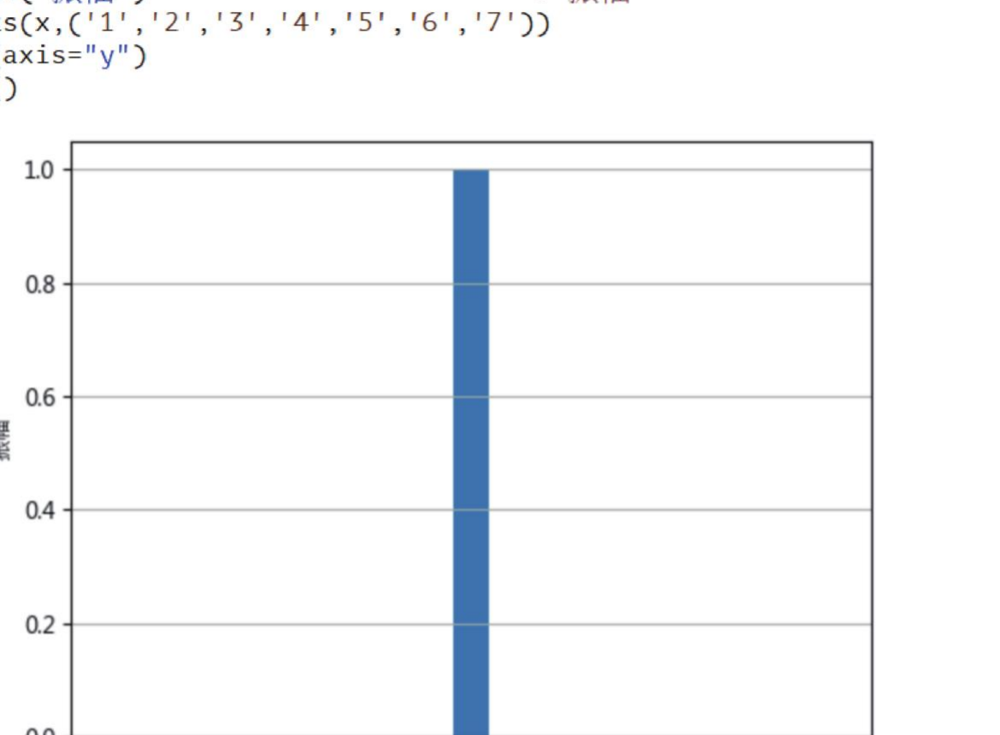
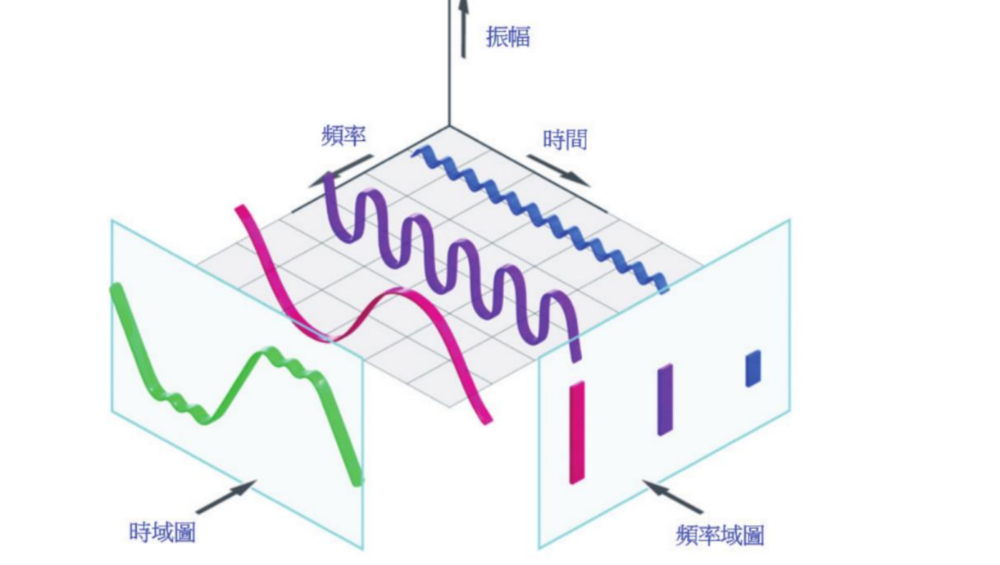
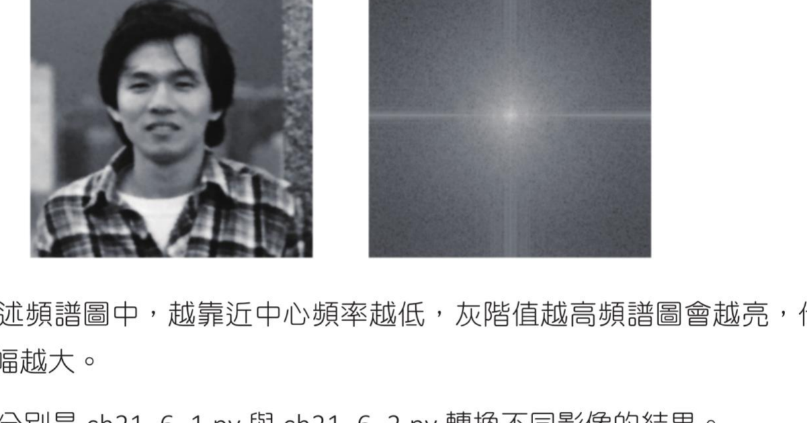
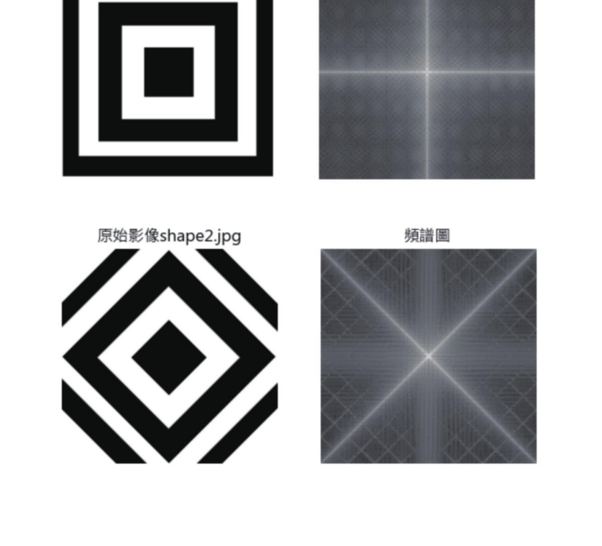
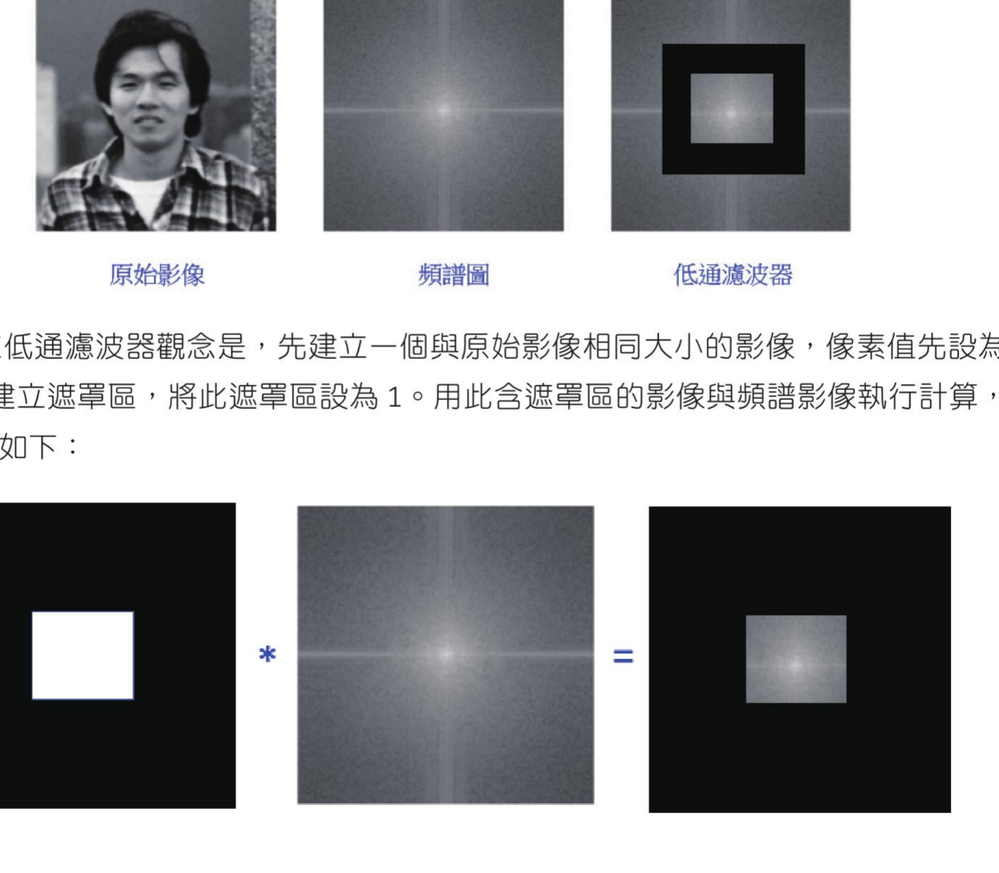

第 21 章
傅立叶（Fourier）变换
本章共 4 个小节 · 数据座标轴转换 · 傅立叶基础理论 · 使用 Numpy 执行傅立叶变换 · 使用 OpenCV 完成傅立叶变换
在影像处理中，我们可以将影像区分为空间域和频率域。至今所有影像处理皆是在空间域处理。这一章介绍傅立叶变换：这是一种将影像从空间域转换到频率域的方法；然后可以在频率域内进行影像处理；最后再使用逆傅立叶运算将影像从频率域转换回空间域。
21-1
数据座标轴转换的基础知识
这一节先从简单的数据着手。假设要调制台湾冬天最流行的烧仙草，在慢火调制过程中需要下列步骤，笔者命名为表 21-1。
| 时间 | 0 | 1 | 2 | 3 | 4 | 5 | 6 | 7 | 8 | 9 | 10 | 11 |
|---|
| 纯水 | 1 | 1 | 1 | 1 | 1 | 1 | 1 | 1 | 1 | 1 | 1 | 1 |
| 黑糖 | 2 | 0 | 2 | 0 | 2 | 0 | 2 | 0 | 2 | 0 | 2 | 0 |
| 仙草 | 4 | 0 | 0 | 4 | 0 | 0 | 4 | 0 | 0 | 4 | 0 | 0 |
| 黑珍珠 | 3 | 0 | 0 | 0 | 3 | 0 | 0 | 0 | 3 | 0 | 0 | 0 |
上述表 21-1 数据观念如下：每 1 分钟放 1 杯水；每 2 分钟放 2 份黑糖；每 3 分钟放 4 份仙草；每 4 分钟放 3 颗黑珍珠。上述图表是我们熟知的数据表达方式，浅显易懂，但是在数据处理过程中，我们可以从时域的角度处理表达讯息。
程式实例 ch21_1.py：使用时域角度表达上述烧仙草的调制过程，所以横轴是时间，纵轴是调变的配料份数
# ch21_1.py
import matplotlib.pyplot as plt
plt.rcParams["font.family"] = ["Microsoft JhengHei"] # 正黑体
seq = [0, 1, 2, 3, 4, 5, 6, 7, 8, 9, 10, 11] # 时间值
water = [1, 1, 1, 1, 1, 1, 1, 1, 1, 1, 1, 1] # 水
sugar = [2, 0, 2, 0, 2, 0, 2, 0, 2, 0, 2, 0] # 糖
grass = [4, 0, 0, 4, 0, 0, 4, 0, 0, 4, 0, 0] # 仙草
pearl = [3, 0, 0, 0, 3, 0, 0, 0, 3, 0, 0, 0] # 黑珍珠
plt.plot(seq, water, "-o", label="水") # 绘含标记的 water 折线图
plt.plot(seq, sugar, "-x", label="糖") # 绘含标记的 sugar 折线图
plt.plot(seq, grass, "-s", label="仙草") # 绘含标记的 grass 折线图
plt.plot(seq, pearl, "-p", label="黑珍珠") # 绘含标记的 pearl 折线图
plt.legend(loc="best")
plt.axis([0, 12, 0, 5]) # 建立轴大小
plt.xlabel("时间轴") # 时间轴
plt.ylabel("份数") # 份数
plt.show()

图中横轴为时间，纵轴为份数；水、糖、仙草、黑珍珠以不同折线表示。
如果将上述题目的横轴改为周期（频率的倒数），纵轴仍是份数，我们可以使用直条图表示。
程式实例 ch21_2.py：使用横轴表达周期，纵轴表达份数，重新设计 ch21_1.py，这个执行结果是烧仙草的频率域图
# ch21_2.py
import matplotlib.pyplot as plt
import numpy as np
plt.rcParams["font.family"] = ["Microsoft JhengHei"] # 正黑体
copies = [1, 2, 4, 3] # 份数
N = len(copies)
x = np.arange(N)
width = 0.35
plt.bar(x, copies, width) # 直条图
plt.xlabel("频率") # 频率
plt.ylabel("份数") # 份数
plt.xticks(x, ("1", "2", "3", "4"))
plt.grid(axis="y")
plt.show()

这个程式实例只是为了绘制频率域图，并不是它们之间的转换方式。图中的“水、糖、仙草、黑珍珠”等文字是原书事后加上去的说明。
21-2
傅立叶基础理论
21-2-1 认识傅立叶（Fourier）
傅立叶全名是 Jean-Baptiste Joseph Fourier，1768 年 3 月 21 日至 1830 年 5 月 16 日，法国数学、物理学家。1807 年傅立叶发表了固体的热传学（On the propagation of Heat in solid Bodies），开始有了傅立叶分析的观念出现；1822 年傅立叶出版了热的解析理论（Théorie analytique de la chaleur），在这本著作中有了完整傅立叶理论的诞生。
21-2-2 圆与弦波
在数学中，所谓的正弦波是指 sin(x) 函数所产生的波形；余弦波则是由 cos(x) 所产生的波形。如果称弦波，则是指 sin(x) 或 cos(x) 所产生的波形。由弦波组成的函数，我们称为弦函数。仔细观察，弦波其实就是一个圆周运动在一条直线上的投影。

原书图注说明：上图取材自 https://en.wikipedia.org/wiki/File:Fourier_series_square_wave_circles_animation.gif
21-2-3 正弦函数的时域图与频率域图
这一节先建立一个正弦函数，然后绘制此函数的曲线。
程式实例 ch21_3.py：在 0~1 之间，绘制正弦函数 y = sin(25*x) 的时域图，横轴是时间，纵轴是振幅
# ch21_3.py
import matplotlib.pyplot as plt
import numpy as np
plt.rcParams["font.family"] = ["Microsoft JhengHei"] # 正黑体
plt.rcParams["axes.unicode_minus"] = False # 可以显示负数
start = 0
end = 1
x = np.linspace(start, end, 500) # 建立时间区间
y = np.sin(25 * x) # 建立正弦曲线
plt.plot(x, y)
plt.title("正弦曲线", fontsize=16) # 标题
plt.xlabel("时间（秒）") # 时间轴
plt.ylabel("振幅") # 振幅轴
plt.show()
如果从频率域的角度看上述正弦函数，这时的横座标是频率，纵座标是振幅，我们可以得到频率域图。
程式实例 ch21_4.py：建立相同正弦函数 y = sin(25*x) 的频率域图
# ch21_4.py
import matplotlib.pyplot as plt
import numpy as np
plt.rcParams["font.family"] = ["Microsoft JhengHei"] # 正黑体
amplitude = [0, 0, 0, 1, 0, 0, 0]
N = len(amplitude)
x = np.arange(N)
width = 0.3
plt.bar(x, amplitude, width) # 直条图
plt.xlabel("频率") # 频率轴
plt.ylabel("振幅") # 振幅轴
plt.xticks(x, ("1", "2", "3", "4", "5", "6", "7"))
plt.grid(axis="y")
plt.show()

程式 ch21_3.py 的时域图和 ch21_4.py 的频率域图，是相同正弦函数的不同表达方式。
21-2-4 傅立叶变换理论基础
傅立叶定理：任何连续的周期性函数都可以分解成由不同频率的正弦函数（sin）以及余弦函数（cos）所组成。有限的正弦曲线的确无法组合成有棱角的讯号；但是无限的正弦曲线则可以组成有棱角的讯号。

原书图注说明：上图取材自 ifm 的 frequency-domain 技术说明页面。
蓝色、紫色与红色的曲线就是弦函数，这 3 条弦函数组合成绿色的弦函数。从时域图可以看到最后组成的函数结果；从频率域图看到的其实就是几条直线。
程式实例 ch21_5.py：将两个正弦波相加，然后列出结果
# ch21_5.py
import matplotlib.pyplot as plt
import numpy as np
plt.rcParams["font.family"] = ["Microsoft JhengHei"] # 正黑体
plt.rcParams["axes.unicode_minus"] = False # 可以显示负数
start = 0
end = 5
freq1 = 5 # 频率是 5Hz
freq2 = 8 # 频率是 8Hz
time = np.linspace(start, end, 500) # 建立时间轴
amplitude1 = np.sin(2 * np.pi * freq1 * time)
amplitude2 = np.sin(2 * np.pi * freq2 * time)
figure, axis = plt.subplots(3, 1) # 建立子图
plt.subplots_adjust(hspace=1)
axis[0].set_title("频率是5Hz的sin波")
axis[0].plot(time, amplitude1)
axis[0].set_xlabel("时间")
axis[0].set_ylabel("振幅")
axis[1].set_title("频率是8Hz的sin波")
axis[1].plot(time, amplitude2)
axis[1].set_xlabel("时间")
axis[1].set_ylabel("振幅")
amplitude = amplitude1 + amplitude2
axis[2].set_title("2个不同频率正弦波的结果")
axis[2].plot(time, amplitude)
axis[2].set_xlabel("时间")
axis[2].set_ylabel("振幅")
plt.show()
21-3
使用 Numpy 执行傅立叶变换
21-3-1 实作傅立叶变换
Numpy 模组所提供的傅立叶变换函数如下，下列函数主要是将影像从空间域转成频率域。
f = np.fft.fft2(src, s=None, axes=(-2, -1))
| 参数 / 返回值 | 说明 |
|---|
src | 输入影像或阵列；在本章实例中是灰阶影像。 |
s | 整数序列，输出阵列的大小；如果省略，则输出大小与输入大小一致。 |
axes | 整数轴；如果省略，则使用最后 2 个轴。 |
f | 回传值，这是含复数的阵列（complex ndarray）。 |
影像经过上述傅立叶变换函数处理后，可以得到频率域图；但是 0 频率分量的中心位置会出现在左上角，通常需要使用 np.fft.fftshift() 将 0 频率分量的中心位置移到中间。
fshift = np.fft.fftshift(f)
上述得到的是复数阵列，接下来要将此复数阵列转为在 [0, 255] 间的灰阶值，我们又将此称为傅立叶频谱，简称频谱。
fimg = 20 * np.log(np.abs(fshift))
程式实例 ch21_6.py：使用傅立叶变换，绘制 jk.jpg 影像的频率域图，也称频谱图
# ch21_6.py
import cv2
import numpy as np
from matplotlib import pyplot as plt
plt.rcParams["font.family"] = ["Microsoft JhengHei"]
src = cv2.imread("jk.jpg", cv2.IMREAD_GRAYSCALE)
f = np.fft.fft2(src) # 转成频率域
fshift = np.fft.fftshift(f) # 0 频率分量移至中心
spectrum = 20 * np.log(np.abs(fshift)) # 转成频谱
plt.subplot(121) # 绘制左边原图
plt.imshow(src, cmap="gray") # 灰阶显示
plt.title("原始影像")
plt.axis("off") # 不显示座标轴
plt.subplot(122) # 绘制右边频谱图
plt.imshow(spectrum, cmap="gray") # 灰阶显示
plt.title("频谱图")
plt.axis("off") # 不显示座标轴
plt.show()

越靠近中心频率越低；灰阶值越高，频谱图越亮，代表该频率的讯号振幅越大。

分别是 ch21_6_1.py 与 ch21_6_2.py 转换不同影像的结果。
程式实例 ch21_6_3.py：重新设计 ch21_6.py，没有将 0 频率分量的中心位置移到中间的结果观察
src = cv2.imread("jk.jpg", cv2.IMREAD_GRAYSCALE)
f = np.fft.fft2(src) # 转成频率域
# fshift = np.fft.fftshift(f) # 0 频率分量移至中心
spectrum = 20 * np.log(np.abs(f)) # 转成频谱
21-3-2 逆傅立叶变换
可以使用傅立叶变换切换到频率域，也可以使用逆傅立叶运算将频谱图切换回原始影像。Numpy 模组的 np.fft.ifftshift() 是 np.fft.fftshift() 的逆运算，可以将频率 0 的中心位置移回左上角。
ifshift = np.fft.ifftshift(fshift)
img_tmp = np.fft.ifft2(ifshift)
img_back = np.abs(img_tmp)
程式实例 ch21_7.py：执行傅立叶的逆变换
# ch21_7.py
import cv2
import numpy as np
from matplotlib import pyplot as plt
plt.rcParams["font.family"] = ["Microsoft JhengHei"]
src = cv2.imread("jk.jpg", cv2.IMREAD_GRAYSCALE)
# 傅立叶变换
f = np.fft.fft2(src) # 转成频率域
fshift = np.fft.fftshift(f) # 0 频率分量移至中心
# 逆傅立叶变换
ifshift = np.fft.ifftshift(fshift) # 0 频率分量移回左上角
src_tmp = np.fft.ifft2(ifshift) # 逆傅立叶
src_back = np.abs(src_tmp) # 取绝对值
plt.subplot(121) # 绘制左边原图
plt.imshow(src, cmap="gray") # 灰阶显示
plt.title("原始影像")
plt.axis("off")
plt.subplot(122) # 绘制右边逆运算图
plt.imshow(src_back, cmap="gray") # 灰阶显示
plt.title("逆变换影像")
plt.axis("off")
plt.show()
21-3-3 高频讯号与低频讯号
一幅影像使用傅立叶转为频率域后，可以将讯号分成高频讯号与低频讯号。高频讯号：如果振幅在短时间内变化很快，就可以称为高频讯号，影像通常会在图案边缘或噪音处产生高频讯号。低频讯号：如果振幅在短时间内变化不大，就可以称为低频讯号。
21-3-4 高通滤波器与低通滤波器
在频率域中，可以设计高通滤波器与低通滤波器。高通滤波器让高频讯号通过，可增强影像细节；低通滤波器让低频讯号通过，可去除噪音，但也会抑制影像边缘讯息并造成影像模糊。
rows, cols = image.shape
row, col = rows // 2, cols // 2
假设要设计高通滤波器，可以设定中心点上下左右各 30 为 0，30 是 OpenCV 官方手册建议值。
fshift[row-30:row+30, col-30:col+30] = 0
程式实例 ch21_8.py：使用 snow.jpg 影像，使用高通滤波器观念重新设计 ch21_7.py
# ch21_8.py
import cv2
import numpy as np
from matplotlib import pyplot as plt
plt.rcParams["font.family"] = ["Microsoft JhengHei"]
src = cv2.imread("snow.jpg", cv2.IMREAD_GRAYSCALE)
# 傅立叶变换
f = np.fft.fft2(src) # 转成频率域
fshift = np.fft.fftshift(f) # 0 频率分量移至中心
# 高通滤波器
rows, cols = src.shape # 取得影像外形
row, col = rows // 2, cols // 2 # rows, cols 的中心
fshift[row-30:row+30, col-30:col+30] = 0 # 低频率分量设为 0
# 逆傅立叶变换
ifshift = np.fft.ifftshift(fshift) # 0 频率分量移回左上角
src_tmp = np.fft.ifft2(ifshift) # 逆傅立叶
src_back = np.abs(src_tmp) # 取绝对值
plt.subplot(131)
plt.title("原始影像")
plt.imshow(src, cmap="gray")
plt.axis("off")
plt.subplot(132)
plt.imshow(src_back, cmap="gray")
plt.title("高通滤波灰阶影像")
plt.axis("off")
plt.subplot(133)
plt.title("高通滤波影像")
plt.imshow(src_back)
plt.axis("off")
plt.show()
21-4
使用 OpenCV 完成傅立叶变换
21-4-1 使用 dft() 函数执行傅立叶变换
OpenCV 提供 dft() 函数执行傅立叶变换，语法如下。
dft = cv2.dft(src, flags)
| 参数 / 返回值 | 说明 |
|---|
src | 输入影像或阵列；这是灰阶影像，不过使用前必须先转换为 np.float32 格式。 |
flags | 转换标记，建议使用 DFT_COMPLEX_OUTPUT。 |
dft | 回传值是含复数的阵列，具有 2 个通道：一个是实数部分，另一个是虚数部分。 |
| 具名参数 | 说明 |
|---|
DFT_INVERSE | 对一维或二维阵列做逆变换。 |
DFT_SCALE | 缩放标记，输出会除以元素数目 N。 |
DFT_ROWS | 对输入变数的每一列进行变换或逆变换。 |
DFT_COMPLEX_OUTPUT | 建议使用，输出含有实数与虚数。 |
DFT_REAL_OUTPUT | 输出是复数矩阵。 |
DFT_COMPLEX_INPUT | 输入是复数矩阵。 |
由于回传结果是频谱讯息，且频率分量在左上角，所以须使用 np.fft.fftshift() 将 0 频率分量移到中间位置。
dftshift = np.fft.fftshift(dft)
输出结果仍是复数，这时需要使用 OpenCV 的 magnitude() 函数计算振幅值。
result = cv2.magnitude(x, y)
| 参数 | 说明 |
|---|
x | 浮点数的 x 座标值，相当于是实数部分，引用方式为 dftshift[:, :, 0]。 |
y | 浮点数的 y 座标值，相当于是虚数部分，引用方式为 dftshift[:, :, 1]。 |
dst = 20 * np.log(cv2.magnitude(dftshift[:, :, 0], dftshift[:, :, 1]))
程式实例 ch21_9.py：使用 OpenCV 的 dft() 函数重新设计 ch21_6.py
# ch21_9.py
import cv2
import numpy as np
from matplotlib import pyplot as plt
plt.rcParams["font.family"] = ["Microsoft JhengHei"]
src = cv2.imread("jk.jpg", cv2.IMREAD_GRAYSCALE)
# 转成频率域
dft = cv2.dft(np.float32(src), flags=cv2.DFT_COMPLEX_OUTPUT)
dftshift = np.fft.fftshift(dft) # 0 频率分量移至中心
# 计算映射到 [0, 255] 的振幅
spectrum = 20 * np.log(cv2.magnitude(dftshift[:, :, 0], dftshift[:, :, 1]))
plt.subplot(121)
plt.title("原始影像")
plt.imshow(src, cmap="gray")
plt.axis("off")
plt.subplot(122)
plt.imshow(spectrum, cmap="gray")
plt.title("频谱图")
plt.axis("off")
plt.show()
21-4-2 使用 OpenCV 执行逆傅立叶运算
OpenCV 提供逆傅立叶运算函数 idft()，这个函数可以执行 dft() 的逆运算。
dst = cv2.idft(src, flags)
程式实例 ch21_10.py：使用 shape2.jpg 影像，绘制这个影像和频谱图，最后执行逆运算绘制此影像
# ch21_10.py
import cv2
import numpy as np
from matplotlib import pyplot as plt
plt.rcParams["font.family"] = ["Microsoft JhengHei"]
src = cv2.imread("shape2.jpg", cv2.IMREAD_GRAYSCALE)
# 转成频率域
dft = cv2.dft(np.float32(src), flags=cv2.DFT_COMPLEX_OUTPUT)
dftshift = np.fft.fftshift(dft) # 0 频率分量移至中心
# 计算映射到 [0, 255] 的振幅
spectrum = 20 * np.log(cv2.magnitude(dftshift[:, :, 0], dftshift[:, :, 1]))
# 执行逆傅立叶
idftshift = np.fft.ifftshift(dftshift)
tmp = cv2.idft(idftshift)
dst = cv2.magnitude(tmp[:, :, 0], tmp[:, :, 1])
plt.subplot(131)
plt.imshow(src, cmap="gray")
plt.title("原始影像shape2.jpg")
plt.axis("off")
plt.subplot(132)
plt.imshow(spectrum, cmap="gray")
plt.title("频谱图")
plt.axis("off")
plt.subplot(133)
plt.imshow(dst, cmap="gray")
plt.title("逆傅立叶影像")
plt.axis("off")
plt.show()
21-4-3 高通滤波器与低通滤波器
21-3-4 节讲解了高通滤波器与低通滤波器的原理，这一节使用 OpenCV 讲解低通滤波器的实例。对低通滤波器而言，相当于建立下列滤波器。

先建立一个与原始影像相同大小的影像，像素值先设为 0，然后建立遮罩区，将此遮罩区设为 1。
rows, cols = image.shape
row, col = rows // 2, cols // 2
mask = np.zeros((rows, cols, 2), np.uint8)
mask[row-30:row+30, col-30:col+30] = 1
result = dftshift * mask
程式实例 ch21_11.py：使用 OpenCV 建立低通滤波器的实例，这个实例可以看到影像的边缘讯息变弱，所以造成影像模糊
# ch21_11.py
import cv2
import numpy as np
from matplotlib import pyplot as plt
plt.rcParams["font.family"] = ["Microsoft JhengHei"]
src = cv2.imread("jk.jpg", cv2.IMREAD_GRAYSCALE)
# 傅立叶变换
dft = cv2.dft(np.float32(src), flags=cv2.DFT_COMPLEX_OUTPUT)
dftshift = np.fft.fftshift(dft) # 0 频率分量移至中心
# 低通滤波器
rows, cols = src.shape # 取得影像外形
row, col = rows // 2, cols // 2 # rows, cols 的中心
mask = np.zeros((rows, cols, 2), np.uint8)
mask[row-30:row+30, col-30:col+30] = 1 # 低频率分量设为 1
fshift = dftshift * mask
ifshift = np.fft.ifftshift(fshift) # 0 频率分量移回左上角
src_tmp = cv2.idft(ifshift) # 逆傅立叶
src_back = cv2.magnitude(src_tmp[:, :, 0], src_tmp[:, :, 1])
plt.subplot(131)
plt.imshow(src, cmap="gray")
plt.title("原始影像")
plt.axis("off")
plt.subplot(132)
plt.imshow(src_back, cmap="gray")
plt.title("低通滤波灰阶影像")
plt.axis("off")
plt.subplot(133)
plt.imshow(src_back)
plt.title("低通滤波影像")
plt.axis("off")
plt.show()
1. 使用 lena.jpg 代入 ch21_8.py，体会不同影像的感觉。
2. 使用 lena.jpg 影像和 Numpy 模组，设计低通滤波灰阶影像和低通滤波影像。
3. 使用 lena.jpg 影像和 OpenCV 模组，设计高通滤波灰阶影像和高通滤波影像。